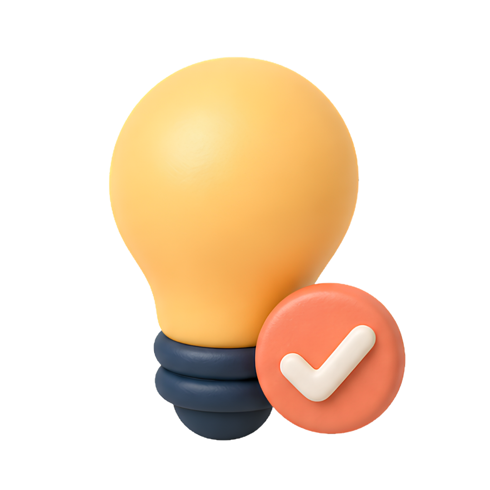

Gabriela L. · Grew up building ofrendas in Guadalajara
Gabriela L. · Grew up building ofrendas in Guadalajara
In one line
It's not "Mexican Halloween." It's a warm family reunion where the dead are invited home as honored guests.
Explore the ofrenda
Five things on every altar. Tap one.
{{ cur.es }}{{ cur.en }}
{{ cur.d }}
Not Halloween
HALLOWEEN · OCT 31
Roots: scaring spirits awayMood: spooky, playfulCenter: the doorstep, candy, costumes
DÍA DE LOS MUERTOS · NOV 1–2
Roots: inviting the dead backMood: tender, celebratoryCenter: the ofrenda and the cemetery
Phrases you'll hear
{{ p.es }}
{{ p.en }}
Across Mexico
Pátzcuaro
Candlelit boats cross the lake to the island cemetery.
Oaxaca
Sand tapestries and all-night comparsas in the streets.
Mexico City
A giant parade and the Zócalo filled with ofrendas.
Questions learners ask
Can visitors join in?+
Yes, respectfully. Ask before photographing family ofrendas or graves.
Día de Muertos or Día de los Muertos?+
Both are correct. In Mexico, Día de Muertos is more common.